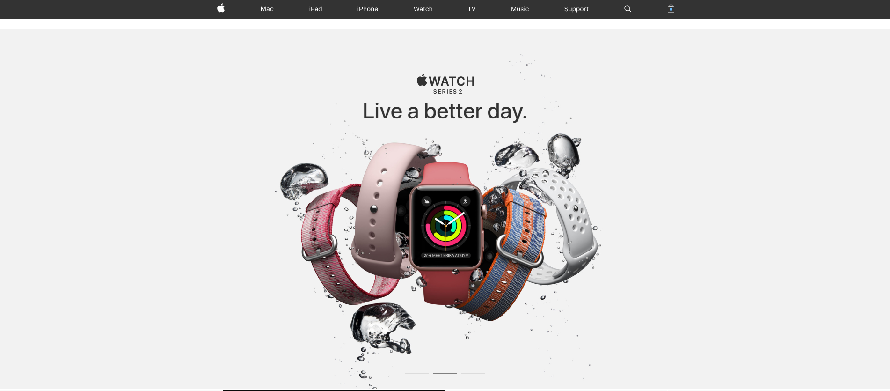
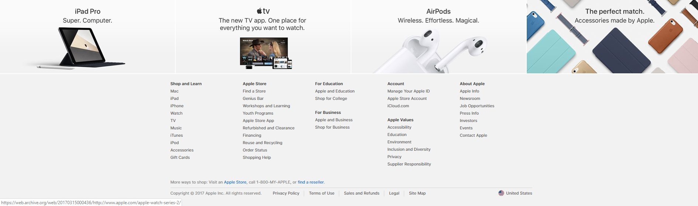

Overall the aesthetics of apple’s website and user interface have been a key to its successes. When looking at Apple's website, psychologically we find certain things to be appleing. It's easy formatting and simple design is something that draws people in. According to Amber Leigh Turner in TWN, “Keeping things simple with a well-organized website using adequate white space tells visitors you know what’s important and you don’t want to waste their time.”(The Next Web, DESIGN & DEV, 24 July 2018). This is something that Apple really utilizes in their webpages, starting with their 1996 webpage all the way to their 2019 webpage. Psychologically the colors and patterns that apple implements in their website are aesthetically pleasing to the user. They use bright colors that are extremely heightened by the contrasting background colors of white and in some cases black. Things like tabs and links, which lead to other webpages have a psychological impact on us because we feel as if where in control of the webpage. We feel as if that webpage was specified to our individual needs, thus making the users visit enjoyable.